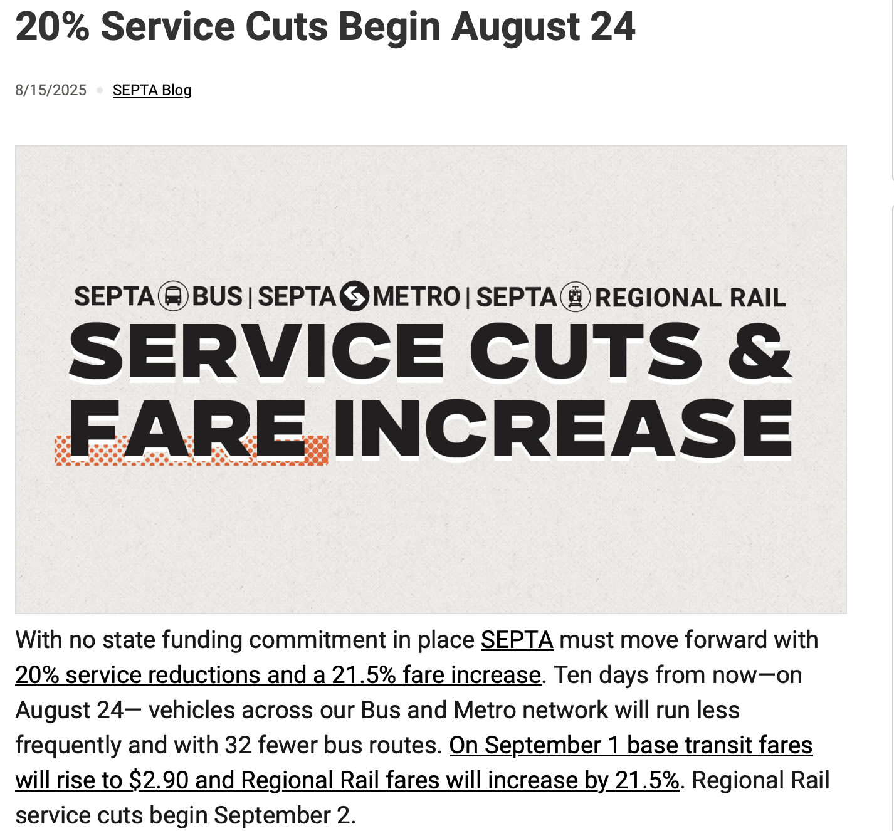
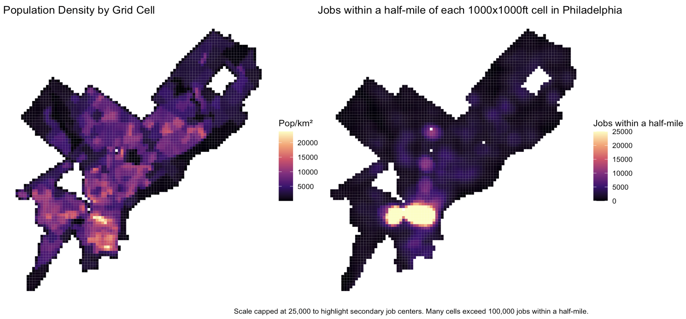
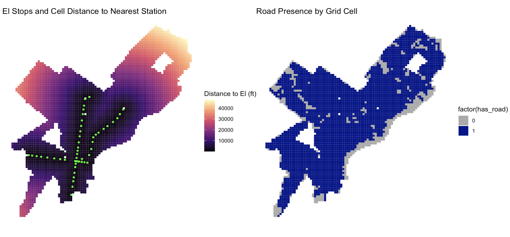
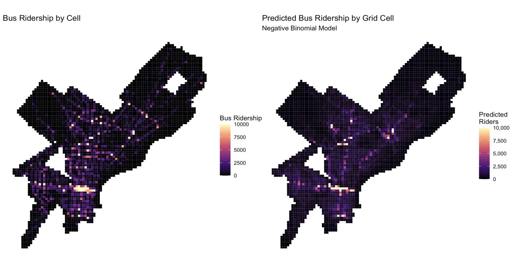
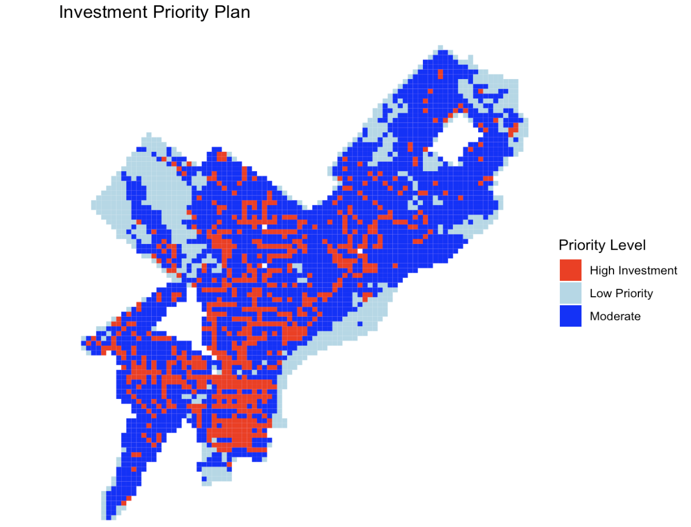

Optimizing Resource Allocation Across Philadelphia
2026-01-01
Based on predicted ridership, which parts of Philadelphia should SEPTA invest more or less resources?

SEPTA Bus Stop Summaries — Fall Season
Why only 2022–2025?
Predictors used across the city at the grid-cell level:


We ran four models of increasing complexity:
OLS — Baseline linear model
Spatial Lag — Accounts for spatial autocorrelation in ridership
Poisson — Standard count model for comparison
Negative Binomial — Handles overdispersed count data
| Model | MAE | RMSE |
|---|---|---|
| OLS(ln_riders) | 1.18 | 1.50 |
| Spatial Lag(ln_riders) | 1.14 | 1.47 |
| Poisson | 523 | 1475.21 |
| Negative Binomial | 523 | 1473.69 |

Multicollinearity
Model is Anchored to Current Conditions
How would the city use our model?

Priority determined by predicted ridership minus actual ridership